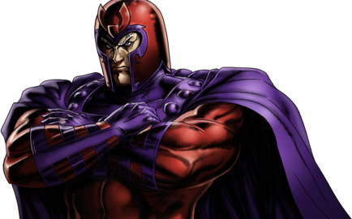
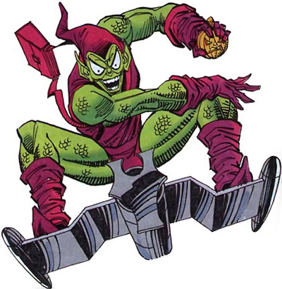
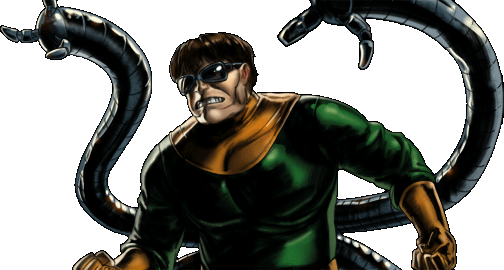

Joker - Magneto - Green Goblin - Lex Luthor - Doctor Octopus
The Joker, Clown Prince of Crime, is Batman's arch-nemesis. An agent of chaos known for his malicious plots, wacky gadgets and insidious smile, he has caused Batman more suffering than any other villain he has ever faced. His origin, name, and true motivations remain a mystery.

Among the most powerful, recognizable, and infamous mutants to inhabit the planet Earth, Magneto was the X-Men's first major nemesis. Now known as a revolutionist and terrorist, Magneto has fought for the X-Men as many times as he’s been against them.

Known for many years as the Green Goblin and Spider-Man's arch-enemy and murderer of his first love Gwen Stacy , Osborn fooled the world into thinking he's a hero under the guise of the Iron Patriot and outed many heroes as cowards. His downfall was caused by his own insanity when he led a Siege on Asgard. He recently came back as Goblin King.

Lex Luthor, Superman's arch-nemesis, is one of the most gifted beings alive, whose hatred of "interfering aliens" pushes him down the path of a sociopath. Known for his "ends justifies the means" approach to life, his single-minded and often brutal focus puts him at odds with The Man of Steel. Lex Luthor is arguably DC Comics' most iconic villain.

A former nuclear physicist and atomic researcher, Otto Octavius' life changed forever when one of his experiments went horribly wrong. From that day forward, he has set out to prove his superior intellect in a number of ways, but these plans are usually thwarted by Spider-Man.

Look up more in Comic Vine!
Back to main page.